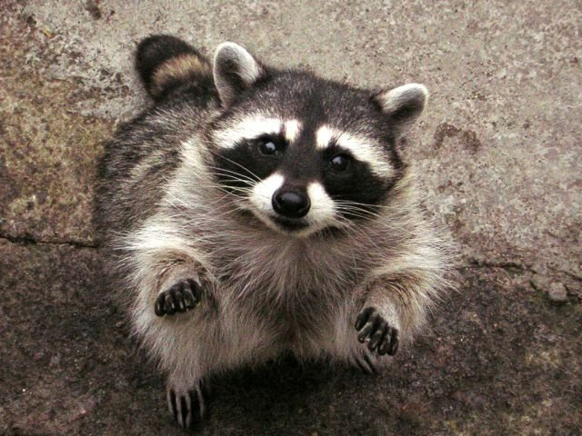
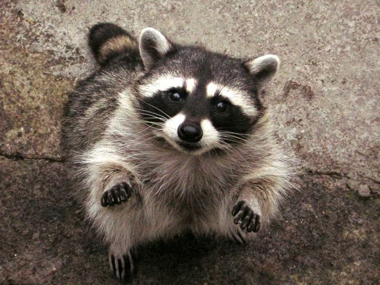
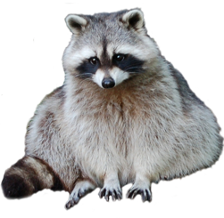
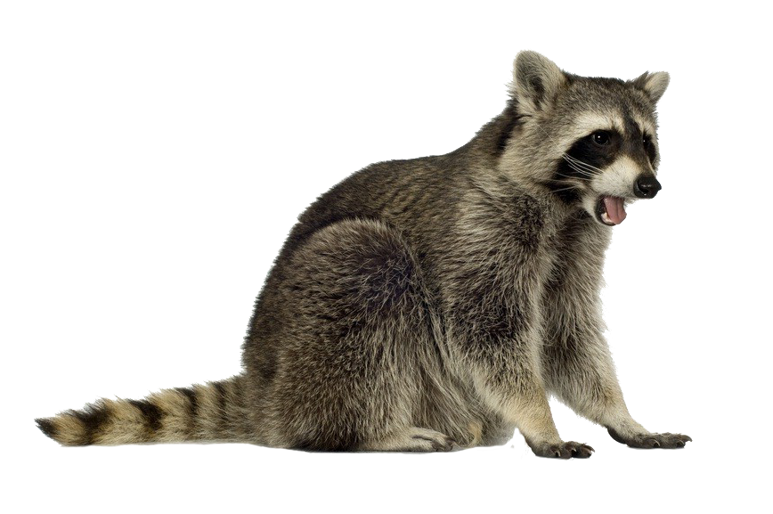
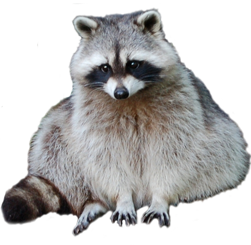
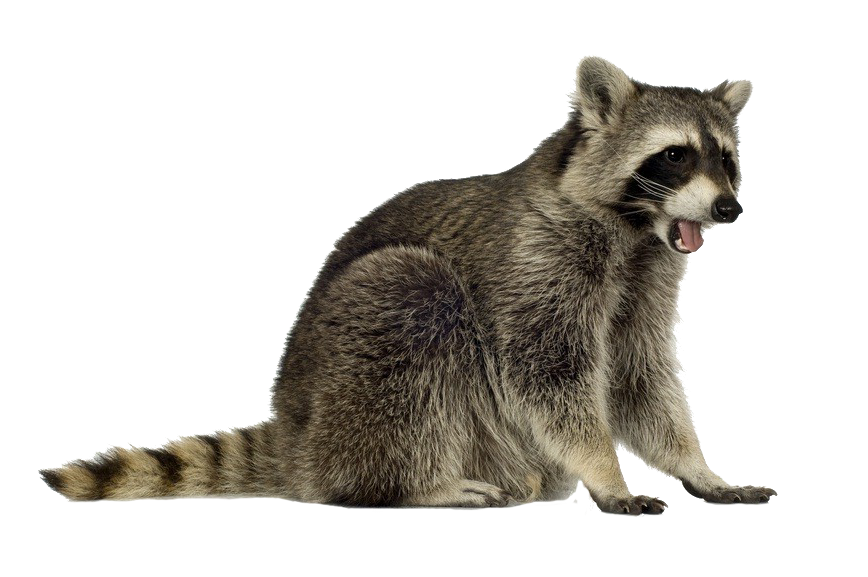
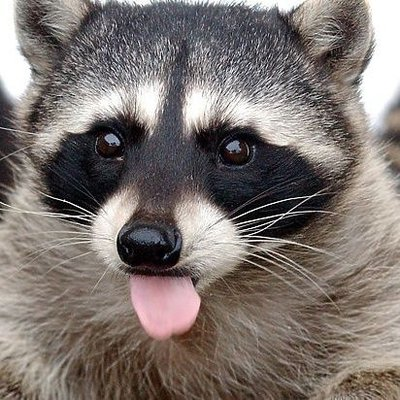
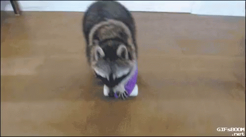

Симпатичный, пушистый, чрезвычайно любопытный чёрно-белый зверёк с шикарным длинным полосатым хвостом мало кому придется не по душе. Несмотря на то, что это безобидное на первый взгляд животное является не только всеядным, но и довольно-таки успешным хищником и добытчиком: если какая-нибудь пища ему приглянулась, будь то чрезвычайно жирная курица, бегающая по двору, или без присмотра оставленный сладкий изюм или фрукты – от цели енота вряд ли что отвлечёт – и он это однозначно съест.
 
